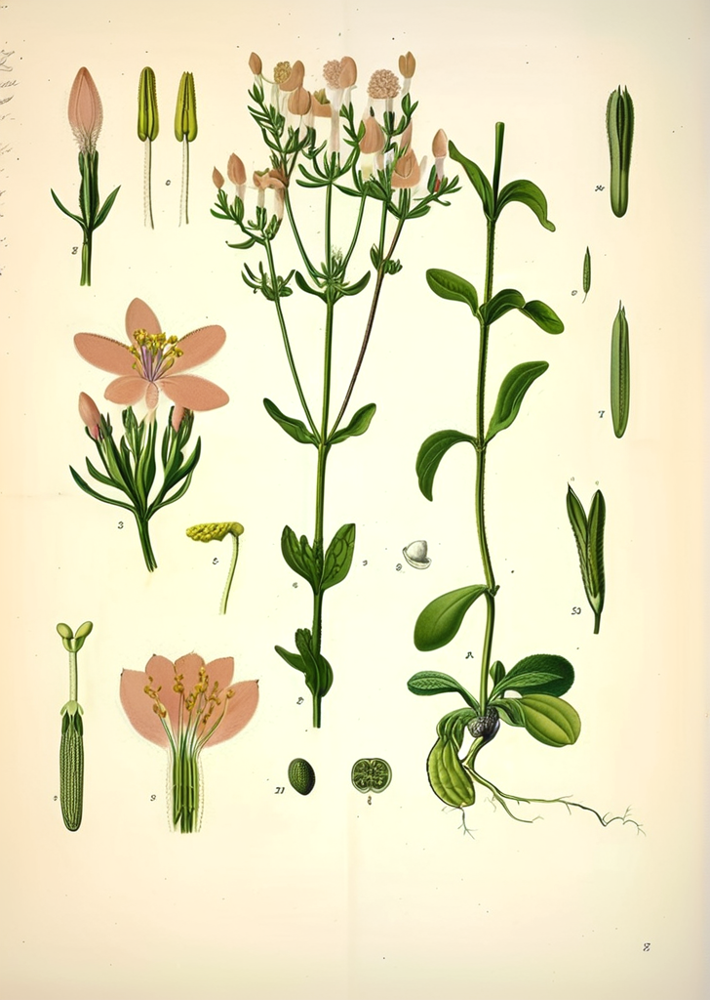

Gentianella alborosea
Hercampuri
Hercampuri
La Gentianella alborosea, conocida como hercampuri en quechua, es una herbácea anual de la familia Gentianaceae que crece en las zonas altas de los Andes peruanos. Desde tiempos prehispánicos, ha sido utilizada en la medicina tradicional andina como depurativo y hepatoprotector.
En la medicina tradicional peruana, el hercampuri se considera una planta amarga con propiedades depurativas. La medicina popular de los Andes centrales la emplea en preparaciones para apoyar la función hepática y como coadyuvante en dietas de control de peso.
Clasificación Botánica
| Familia | Gentianaceae |
|---|---|
| Género | Gentianella |
| Especie | alborosea (Gilg) Fabris ex Filg. |
| Origen | Altiplano andino peruano, 3 500-4 500 msnm |
| Partes usadas | Partes aéreas (tallo y hojas) |
Compuestos Activos
Los principios activos incluyen secoiridoides (amarogentina, gentiopicrina, swerosida), xantonas y flavonoides. Los compuestos amargos secoiridoidicos son característicos de la familia Gentianaceae y están asociados tradicionalmente con propiedades digestivas y hepatoprotectoras.
Usos Tradicionales
En la etnomedicina andina, el hercampuri se prepara en infusión de las partes aéreas para depurar el organismo. La medicina popular lo considera útil para apoyar el metabolismo de las grasas y como complemento en dietas de reducción ponderal. Su sabor amargo es característico de las gentianáceas.
Evidencia Científica
Lock et al. 2004 Los secoiridoides de plantas de la familia Gentianaceae, incluyendo especies relacionadas, mostraron propiedades antioxidantes en modelos de estudio.
Gonçalves et al. 2005 Estudios fitoquímicos de gentianáceas andinas han identificado los secoiridoides como principales metabolitos responsables de las propiedades amargas tradicionales.
Precauciones
El hercampuri es generalmente considerado seguro cuando se consume en cantidades tradicionales como infusión herbácea. Las personas con úlceras pépticas o gastritis pueden experimentar irritación debido al contenido de compuestos amargos. No se recomienda durante el embarazo ni en niños pequeños. Consulte a un profesional de salud antes de usarlo como suplemento.